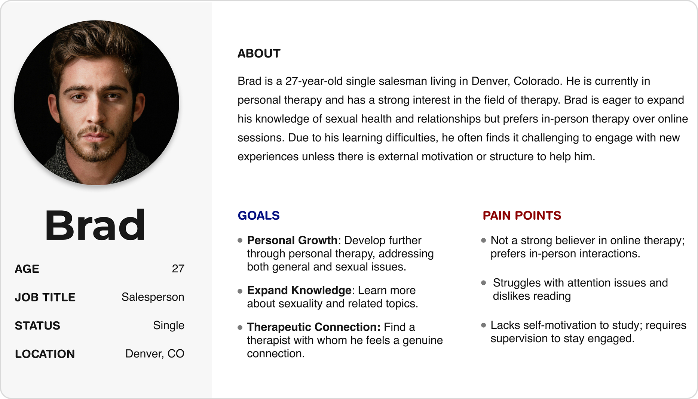
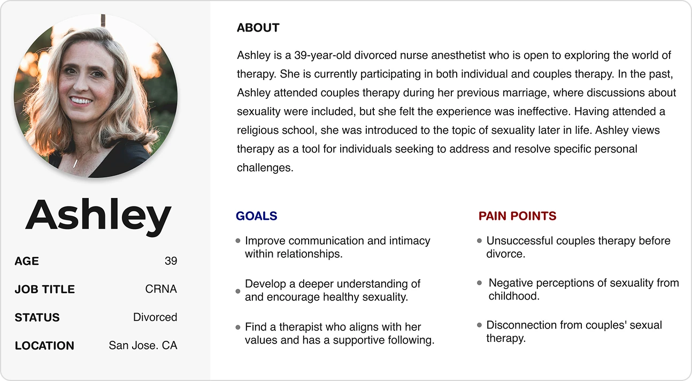
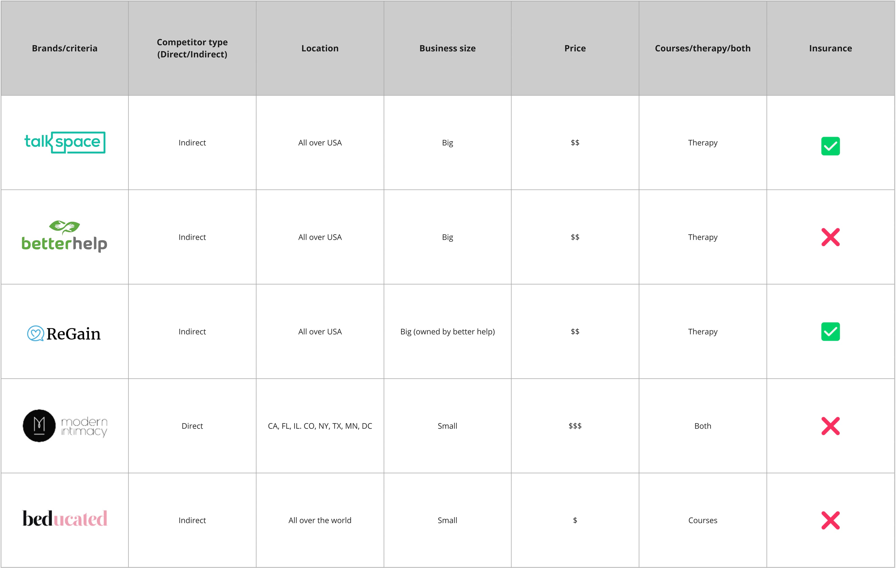

01
Project overview
This project was for JoyMee, a startup aiming to address the lack of accessible sexual education and therapy services. The platform's goal was to provide sexual education courses and a feature where users could be matched with sexual therapists for personalized support.
As the lead UX researcher and designer, I was responsible for the entire user research process, which included conducting interviews, performing competitive analysis, and developing empathy maps to understand our target audience. After gathering insights, I created mockups and low-fidelity prototypes, then worked closely with a UI designer to develop high-fidelity prototypes. Throughout the process, I led the design efforts to ensure the platform was intuitive, visually appealing, and met the users' needs.
02
Problem & goal
Problem
Current platforms for sexual education and therapy are fragmented, lacking inclusivity and a seamless user experience.
Goal
Create an integrated platform that combines sexual education and therapy services, offering an inclusive, user-friendly experience for diverse users.
03
Research
Interviews
I conducted 10 Zoom interviews with participants aged 18 to 55 from diverse backgrounds across the U.S., including individuals who are single, married, divorced, and part of the LGBTQ+ community. The interviews explored their thoughts on sexual education and online sexual therapy. I also performed usability testing with these participants to assess their experiences with the JoyMee platform.
-
Finding 01
Participants viewed sexuality treatment as addressing an existing problem, with 60% linking it to trauma.
-
Finding 02
Women preferred to choose their therapist, while men were either indifferent or preferred therapists who suited them.
-
Finding 03
The majority of participants were taught in childhood that sex and sexuality were taboo and negative.
Personas
Based on the insights gathered from the interviews, I developed 2 personas that represent the target audience for JoyMee. These personas reflect the diverse backgrounds, experiences, and perspectives of participants, highlighting their unique needs and preferences related to sexual education and online therapy.


Competitive analysis
I evaluated 5 competitors (1 direct, 4 indirect) to understand the current landscape and identify gaps for JoyMee.
What I compared
- Product & service offerings
- Target users
- Unique value props
- Insurance / pricing
- Company size & reach
What I learned
- Existing solutions are fragmented across separate tools
- Personalization is limited, especially for first-time users
- Trust & safety features vary widely
- Clear opportunity: a single, trustworthy platform combining education + support + expert matching

04
Wireframes
The wireframes focused on two core user flows: finding a therapist and booking a session, and discovering a course and completing a purchase. These flows were prioritized based on research findings, as they represented the platform's primary value to users. Before moving into high-fidelity, the wireframes were reviewed with the engineering lead, UX manager, founder, and marketing team to validate the structure, surface technical constraints early, and align on product direction.
05
High-fidelity design
Moving into high-fidelity, the design priorities were shaped by the sensitivity of the subject matter. Trust was the foundation — therapist profiles were designed to prominently display credentials and licenses, giving users the confidence to take the step of booking a session. Color and visual tone were chosen deliberately to feel warm and approachable, softening the stigma and embarrassment often associated with sexual health topics.
I collaborated closely with a UI designer who contributed custom illustrations and led the color implementation across the app, translating the structural and interaction decisions from my wireframes into a cohesive, polished visual language.
06
Learnings
-
01
Researching sensitive topics requires ethical care
Interviews around sexual health taught me how to ask deep questions without causing discomfort, creating space for honest responses while respecting boundaries.
-
02
Handoff is a communication skill
Collaborating with a UI designer showed me that justifying the “why” behind interactions and structure is as important as the design decisions themselves.
-
03
Cultural and regulatory context shapes design from the ground up
Designing for the U.S. market meant navigating therapy licensing regulations and learning the cultural nuances in language, taxonomy, and how sensitive topics are framed for American users.